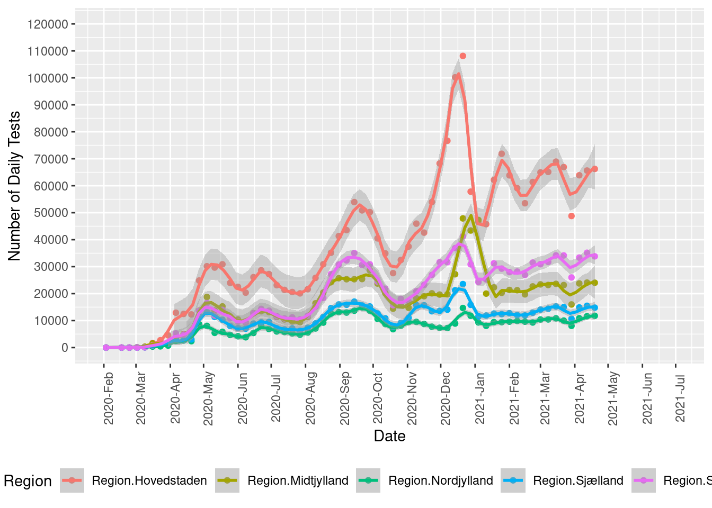

1
Bioinformatics
2
14 Day Incidence per 100,000 citizens
3
Recent Developments (Spring 2021)
4
Last Month
5
250 Incidence Risk
6
Antigen Tests
6.1
Confusion Matrix (last 7 days)
6.2
Compared to final PCR
7
Number of Tests
8
Regional testing
9
Number of tests vs. positive-% over time
10
% Positive
11
Admissions
12
Deaths
13
Tests, admissions, deaths
14
Rt
14.1
Official Rt
14.2
Calculate Rt based on cases
15
Vaccination
15.1
Cumulative completed
15.2
Daily shots
15.3
Asymptotic fit
16
Chapter 1
Chapter 1
8
Regional testing
